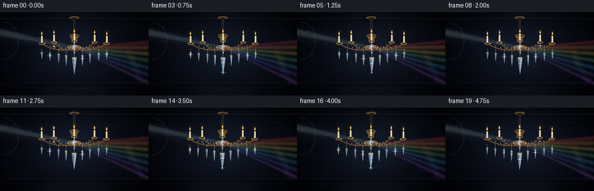
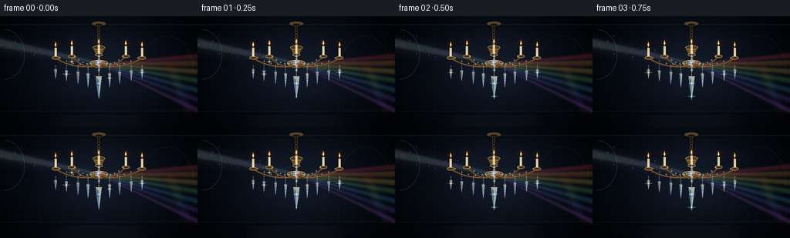

CODING AGENTS AS PIXEL WORLD MODELS
traex/GPT-5.6-Sol · phygen_087
点击播放 · 原生 RGB 像素
逐轮保存的候选
回放视频、检查图与代码变化。
每份候选均可单独播放。实际图片检查记录在下方工具轨迹中。
候选 01播放与检查图
点击播放 · 原生 RGB 像素


展开代码变化
--- 上一保存版本
+++ 本次保存版本
@@ -0,0 +1,271 @@
+from pathlib import Path
+import math
+import numpy as np
+from PIL import Image, ImageDraw, ImageFilter
+import artifact_io
+
+W,H,N = 256,144,20
+S=3
+WS,HS=W*S,H*S
+rng=np.random.default_rng(8701)
+
+def scp(points):
+ return [(int(x*S),int(y*S)) for x,y in points]
+
+def layer(): return Image.new('RGBA',(WS,HS),(0,0,0,0))
+
+def poly(im, pts, fill): ImageDraw.Draw(im).polygon(scp(pts), fill=fill)
+def line(im, pts, fill, width=1, joint='curve'):
+ ImageDraw.Draw(im).line(scp(pts),fill=fill,width=max(1,int(width*S)),joint=joint)
+def ell(im, box, fill, outline=None, width=1):
+ ImageDraw.Draw(im).ellipse(tuple(int(v*S) for v in box),fill=fill,outline=outline,width=max(1,int(width*S)))
+
+def bezier(p0,p1,p2,p3,n=30):
+ out=[]
+ for t in np.linspace(0,1,n):
+ u=1-t
+ out.append((u**3*p0[0]+3*u*u*t*p1[0]+3*u*t*t*p2[0]+t**3*p3[0],
+ u**3*p0[1]+3*u*u*t*p1[1]+3*u*t*t*p2[1]+t**3*p3[1]))
+ return out
+
+def star(im,x,y,r,color,rot=0):
+ d=ImageDraw.Draw(im)
+ # optical four-point glint with a tiny hot core
+ line(im,[(x-r,y),(x+r,y)],color,max(.35,r*.12))
+ line(im,[(x,y-r),(x,y+r)],color,max(.35,r*.12))
+ line(im,[(x-r*.42,y-r*.42),(x+r*.42,y+r*.42)],color,max(.25,r*.07))
+ line(im,[(x-r*.42,y+r*.42),(x+r*.42,y-r*.42)],color,max(.25,r*.07))
+ ell(im,(x-r*.16,y-r*.16,x+r*.16,y+r*.16),(255,255,255,min(255,color[3]+30)))
+
+def crystal(im,x,y,w,h,alpha=225,flip=0):
+ # hanging faceted drop, top at y
+ pts=[(x-w*.42,y),(x+w*.42,y),(x+w*.28,y+h*.42),(x,y+h),(x-w*.28,y+h*.42)]
+ poly(im,pts,(176,220,239,alpha))
+ poly(im,[(x-w*.42,y),(x,y+h*.18),(x,y+h),(x-w*.28,y+h*.42)],(112,166,204,int(alpha*.68)))
+ poly(im,[(x+w*.42,y),(x,y+h*.18),(x,y+h),(x+w*.28,y+h*.42)],(220,242,244,int(alpha*.75)))
+ poly(im,[(x-w*.42,y),(x+w*.42,y),(x,y+h*.18)],(248,232,198,int(alpha*.74)))
+ line(im,[(x-w*.4,y),(x,y+h),(x+w*.4,y)],(238,252,255,int(alpha*.7)),.35)
+ line(im,[(x-w*.28,y+h*.42),(x+w*.28,y+h*.42)],(96,145,181,int(alpha*.55)),.3)
+
+def diamond(im,x,y,r,alpha=220):
+ poly(im,[(x,y-r),(x+r*.72,y),(x,y+r),(x-r*.72,y)],(183,224,239,alpha))
+ poly(im,[(x,y-r),(x,y+r),(x-r*.72,y)],(102,159,193,int(alpha*.7)))
+ poly(im,[(x,y-r),(x+r*.72,y),(x,y)],(246,239,211,int(alpha*.72)))
+ line(im,[(x-r*.72,y),(x+r*.72,y)],(245,255,255,int(alpha*.7)),.3)
+
+# fixed dust particles in normalized beam coordinates
+motes=[]
+for i in range(45):
+ u=rng.uniform(.03,.96); off=rng.normal(0,1.0)
+ size=rng.uniform(.18,.55); phase=rng.uniform(0,2*math.pi)
+ motes.append((u,off,size,phase))
+
+# fixed wall dust speckles / stars
+wallstars=[(rng.uniform(6,247),rng.uniform(10,137),rng.uniform(.1,.35)) for _ in range(90)]
+
+frames=[]
+for fi in range(N):
+ t=fi/N
+ # Background: smoky midnight room, warmer around the chandelier
+ yy,xx=np.mgrid[0:HS,0:WS]/S
+ warm=np.exp(-(((xx-130)/74)**2+((yy-65)/58)**2))
+ vign=np.clip(1-0.55*((xx-W/2)/(W/2))**2-0.38*((yy-H/2)/(H/2))**2,0.25,1)
+ base=np.zeros((HS,WS,4),dtype=np.uint8)
+ base[...,0]=np.clip((8+12*warm)*vign,0,255)
+ base[...,1]=np.clip((13+14*warm)*vign,0,255)
+ base[...,2]=np.clip((24+17*warm)*vign,0,255)
+ base[...,3]=255
+ im=Image.fromarray(base,'RGBA')
+
+ # Architectural wall details kept dim: molding, ceiling, distant panels
+ arch=layer(); da=ImageDraw.Draw(arch)
+ line(arch,[(0,11),(256,11)],(78,71,68,62),1.1)
+ line(arch,[(0,13),(256,13)],(4,7,15,170),1)
+ # wall panel frames and a shadowed right arch
+ for x in (12,52,202,242): line(arch,[(x,20),(x,135)],(77,70,70,25),.65)
+ line(arch,[(0,123),(256,123)],(76,59,52,45),1.2)
+ line(arch,[(0,126),(256,126)],(2,4,10,150),2)
+ # arched implied window/source at far left
+ da.arc((-20*S,17*S,32*S,82*S),270,90,fill=(104,121,135,58),width=1*S)
+ # right wall arch silhouette
+ da.arc((183*S,25*S,251*S,119*S),180,360,fill=(84,75,72,35),width=1*S)
+ line(arch,[(183,72),(183,121),(251,121),(251,72)],(75,66,65,25),.7)
+ for x,y,r in wallstars: ell(arch,(x-r,y-r,x+r,y+r),(155,160,174,18))
+ im=Image.alpha_composite(im,arch)
+
+ # incoming broad shaft, with soft atmospheric edges
+ target=(128.0,61.5)
+ glow=layer()
+ poly(glow,[(-12,21),(-12,48),(131,65),(132,57)],(142,189,219,23))
+ glow=glow.filter(ImageFilter.GaussianBlur(7*S))
+ im=Image.alpha_composite(im,glow)
+ shaft=layer()
+ poly(shaft,[(-5,27),(-5,40),(126.5,63.1),(130.0,59.0)],(183,219,236,35))
+ poly(shaft,[(-5,30),(-5,36),(127.3,62.0),(129.1,60.0)],(226,242,247,32))
+ shaft=shaft.filter(ImageFilter.GaussianBlur(1.4*S))
+ im=Image.alpha_composite(im,shaft)
+ # thin bright center ray
+ ray=layer(); line(ray,[(-4,32.5),(128.5,61.2)],(235,250,255,70),.55)
+ ray=ray.filter(ImageFilter.GaussianBlur(.45*S)); im=Image.alpha_composite(im,ray)
+
+ # airborne dust drifting inside shaft
+ dust=layer()
+ for u,off,sz,ph in motes:
+ # interpolate beam center; width decreases toward prism
+ cx=-3+(131)*u; cy=33+28.3*u
+ width=6.0*(1-u)+1.0
+ drift=math.sin(ph+2*math.pi*t)*.8
+ y=cy+off*width+drift
+ x=cx+math.sin(ph*1.7+2*math.pi*t)*.7
+ a=int(55+45*(.5+.5*math.sin(ph+4*math.pi*t)))
+ ell(dust,(x-sz,y-sz,x+sz,y+sz),(230,243,247,a))
+ dust=dust.filter(ImageFilter.GaussianBlur(.18*S)); im=Image.alpha_composite(im,dust)
+
+ # outgoing dispersive rays; angle subtly changes as central crystal sways
+ sway=1.15*math.sin(2*math.pi*t)
+ prism=(128.2+sway*.38,62.0)
+ spec=layer()
+ colors=[(239,66,83),(255,150,61),(255,222,89),(99,218,141),(76,170,247),(111,100,237),(196,99,238)]
+ ends=[51,61,72,84,97,110,124]
+ for j,(col,ey) in enumerate(zip(colors,ends)):
+ ey += sway*(j-3)*.32
+ # narrow fan bands, overlap near prism and remain translucent
+ poly(spec,[(prism[0]-1,prism[1]-1),(prism[0]+2,prism[1]+1),(261,ey+4.2),(261,ey-3.3)],(*col,26))
+ line(spec,[prism,(260,ey)],(*col,70),.55)
+ # brilliant transmitted white ray at top of fan
+ line(spec,[prism,(260,57+sway*.3)],(243,248,239,76),.75)
+ softspec=spec.filter(ImageFilter.GaussianBlur(3.2*S)); im=Image.alpha_composite(im,softspec)
+ im=Image.alpha_composite(im,spec.filter(ImageFilter.GaussianBlur(.45*S)))
+
+ # Colored caustics projected on right wall/lower floor
+ caust=layer()
+ for j,col in enumerate(colors):
+ cx=218+j*4.1+math.sin(2*math.pi*t+j)*1.2; cy=63+j*9.3+sway*.6
+ ell(caust,(cx-9,cy-2.2,cx+10,cy+2.3),(*col,38))
+ # fragmented prism patch
+ poly(caust,[(cx-4,cy+4),(cx+5,cy+2),(cx+9,cy+5),(cx,cy+7)],(*col,31))
+ caust=caust.filter(ImageFilter.GaussianBlur(4*S)); im=Image.alpha_composite(im,caust)
+
+ # chandelier geometry shifts almost imperceptibly below ceiling mount
+ def tr(p):
+ x,y=p
+ # pendular shear, anchored at y=12
+ return (x+sway*(y-12)/90.0,y)
+ ch_shadow=layer()
+ # ceiling rose and chain glow shadow
+ ell(ch_shadow,(118,7,138,13),(0,0,0,130)); line(ch_shadow,[tr((128,10)),tr((128,39))],(0,0,0,150),2.3)
+ ch_shadow=ch_shadow.filter(ImageFilter.GaussianBlur(2.2*S)); im=Image.alpha_composite(im,ch_shadow)
+
+ metal=layer()
+ # ceiling rose
+ ell(metal,(119,7,137,12),(84,65,43,255),outline=(173,139,82,170),width=.65)
+ ell(metal,(123,9,133,13),(21,20,20,255),outline=(213,172,97,150),width=.5)
+ # chain links
+ for k in range(7):
+ yy0=12+k*3.6
+ x0=128+sway*(yy0-12)/90
+ box=(x0-1.5,yy0,x0+1.5,yy0+4.3)
+ ell(metal,box,(0,0,0,0),outline=(177,138,73,230),width=.65)
+ # crown and stem
+ line(metal,[tr((128,36)),tr((128,70))],(183,139,65,255),1.25)
+ line(metal,[tr((129.1,36)),tr((129.1,69))],(248,208,125,145),.35)
+ cx=tr((128,53))[0]
+ ell(metal,(cx-8,38,cx+8,43),(73,50,30,255),outline=(214,170,88,230),width=.8)
+ poly(metal,[tr((121,42)),tr((135,42)),tr((132,49)),tr((124,49))],(114,78,37,255))
+ line(metal,[tr((122,43)),tr((134,43))],(245,199,105,210),.65)
+ # ornate bowl at beam intersection
+ bowlx=tr((128,62))[0]
+ ell(metal,(bowlx-12,57,bowlx+12,65),(63,43,29,255),outline=(226,180,91,235),width=1)
+ ell(metal,(bowlx-9,59,bowlx+9,67),(109,71,32,255),outline=(252,210,124,150),width=.65)
+ line(metal,[(bowlx-12,61),(bowlx+12,61)],(255,220,143,190),.6)
+
+ # five curved brass arms and candle cups
+ armdata=[(-56,50),(-35,48),(0,46),(35,48),(56,50)]
+ endpoints=[]
+ for idx,(dx,ey) in enumerate(armdata):
+ ex=128+dx; sign=-1 if dx<0 else 1
+ if dx==0:
+ path=[tr((128,60)),tr((128,46))]
+ else:
+ p0=tr((128,60)); p1=tr((128+dx*.22,73)); p2=tr((ex-sign*8,62)); p3=tr((ex,ey+4))
+ path=bezier(p0,p1,p2,p3,34)
+ line(metal,path,(88,58,28,255),2.0)
+ line(metal,[(x-.35,y-.5) for x,y in path],(229,179,86,210),.55)
+ tx=tr((ex,ey))[0]
+ endpoints.append((tx,ey))
+ ell(metal,(tx-5,ey+2,tx+5,ey+6),(71,47,25,255),outline=(220,172,81,230),width=.7)
+ # candle socket and ivory candle
+ line(metal,[(tx,ey+2),(tx,ey-9)],(235,220,178,255),3.1)
+ line(metal,[(tx-.7,ey),(tx-.7,ey-8)],(255,245,210,160),.5)
+ # tiny warm flame
+ poly(metal,[(tx,ey-10),(tx-1.25,ey-13),(tx,ey-17),(tx+1.25,ey-13)],(255,174,61,245))
+ poly(metal,[(tx,ey-11),(tx-.45,ey-13),(tx,ey-15),(tx+.5,ey-13)],(255,246,187,255))
+ im=Image.alpha_composite(im,metal)
+
+ # warm candle halos (subdued so beam remains key)
+ halos=layer()
+ for tx,ey in endpoints:
+ ell(halos,(tx-5,ey-20,tx+5,ey-8),(255,177,74,33))
+ halos=halos.filter(ImageFilter.GaussianBlur(4*S)); im=Image.alpha_composite(im,halos)
+
+ # crystal chains and pendants, in front of metal
+ cry=layer()
+ # swags of linked diamonds from crown/bowl toward arms
+ for tx,ey in endpoints:
+ # draped crystal strand: bowl -> midway lower -> arm
+ for q in np.linspace(.12,.9,6):
+ x=(1-q)*bowlx+q*tx
+ y=(1-q)*58+q*(ey+1)+8*math.sin(math.pi*q)
+ diamond(cry,x,y,1.25,190)
+ # vertical drops beneath arm cups
+ drops=[(-56,6,12),(-42,8,14),(-27,10,16),(-14,13,18),(0,18,25),(14,13,18),(27,10,16),(42,8,14),(56,6,12)]
+ for dx,ln,hh in drops:
+ x=tr((128+dx,65))[0]
+ top=61+2.2*abs(dx)/56
+ line(cry,[(x,top),(x,top+ln)],(188,219,225,155),.45)
+ for yy0 in np.arange(top+2,top+ln,3.2): diamond(cry,x,yy0,.95,160)
+ crystal(cry,x,top+ln,4.0 if dx else 7.2,hh,235 if abs(dx)<20 else 205)
+ # central crystal column and grand teardrop
+ for yy0 in (48,52,56,60,65,70): diamond(cry,tr((128,yy0))[0],yy0,2.25,210)
+ xcen=tr((128,74))[0]
+ line(cry,[(xcen,68),(xcen,79)],(215,234,239,180),.55)
+ crystal(cry,xcen,78,9.5,29,245)
+ # facet rainbow in beam-hit central bowl prism
+ poly(cry,[(bowlx-4,57),(bowlx+5,58),(bowlx+2,65),(bowlx-5,63)],(228,248,255,180))
+ poly(cry,[(bowlx-4,57),(bowlx,61),(bowlx-5,63)],(92,183,255,140))
+ poly(cry,[(bowlx+5,58),(bowlx,61),(bowlx+2,65)],(255,119,154,110))
+ im=Image.alpha_composite(im,cry)
+
+ # sparkle glints: deterministic but moving highlights
+ gl=layer()
+ spark_positions=[]
+ for dx,ln,hh in drops:
+ x=tr((128+dx,65))[0]; y=61+2.2*abs(dx)/56+ln+hh*.33
+ spark_positions.append((x,y))
+ spark_positions += [(bowlx,60),(xcen,89),(xcen,104),tr((93,59)),tr((163,58))]
+ for k,(x,y) in enumerate(spark_positions):
+ strength=.5+.5*math.sin(2*math.pi*(t*1.65)+k*1.71)
+ if strength>.72:
+ r=1.2+3.6*(strength-.72)/.28
+ tint=(220,246,255,int(125+120*strength)) if k%3 else (255,232,179,int(125+120*strength))
+ star(gl,x,y,r,tint)
+ # permanent hot glint precisely where beam strikes
+ star(gl,bowlx-1,60.5,3.2,(244,252,255,245))
+ glblur=gl.filter(ImageFilter.GaussianBlur(1.8*S)); im=Image.alpha_composite(im,glblur)
+ im=Image.alpha_composite(im,gl)
+
+ # subtle foreground floor reflection and letterbox-free vignette
+ refl=layer()
+ poly(refl,[(83,124),(176,124),(196,144),(59,144)],(91,95,99,15))
+ refl=refl.filter(ImageFilter.GaussianBlur(7*S)); im=Image.alpha_composite(im,refl)
+
+ # downsample with antialias and add filmic fine grain
+ rgb=im.convert('RGB').resize((W,H),Image.Resampling.LANCZOS)
+ arr=np.asarray(rgb).astype(np.int16)
+ grain=np.random.default_rng(9900+fi).normal(0,0.72,(H,W,1))
+ arr=np.clip(arr+grain,0,255).astype(np.uint8)
+ frames.append(arr)
+
+frames=np.stack(frames,axis=0)
+artifact_io.save(frames,Path(__file__).resolve().parent)
+print('saved',frames.shape,frames.dtype)
可观测工具轨迹
实际执行的命令与返回图片。
命令 1exit 0
/bin/bash -lc "cat prompt.txt && printf '\\n---RULES---\\n' && cat GENERATION_RULES.md && printf '\\n---SPEC---\\n' && cat task_spec.json"
命令 2exit 0
/bin/bash -lc "find . -maxdepth 2 -type f -printf '%p\\n' | sort"
命令 3exit 0
/bin/bash -lc 'cat artifact_io.py'
命令 4exit 0
/bin/bash -lc "cat > generate.py <<'PY'
from pathlib import Path
import math
import numpy as np
from PIL import Image, ImageDraw, ImageFilter
import artifact_io
W,H,N = 256,144,20
S=3
WS,HS=W*S,H*S
rng=np.random.default_rng(8701)
def scp(points):
return [(int(x*S),int(y*S)) for x,y in points]
def layer(): return Image.new('RGBA',(WS,HS),(0,0,0,0))
def poly(im, pts, fill): ImageDraw.Draw(im).polygon(scp(pts), fill=fill)
def line(im, pts, fill, width=1, joint='curve'):
ImageDraw.Draw(im).line(scp(pts),fill=fill,width=max(1,int(width*S)),joint=joint)
def ell(im, box, fill, outline=None, width=1):
ImageDraw.Draw(im).ellipse(tuple(int(v*S) for v in box),fill=fill,outline=outline,width=max(1,int(width*S)))
def bezier(p0,p1,p2,p3,n=30):
out=[]
for t in np.linspace(0,1,n):
u=1-t
out.append((u**3*p0[0]+3*u*u*t*p1[0]+3*u*t*t*p2[0]+t**3*p3[0],
u**3*p0[1]+3*u*u*t*p1[1]+3*u*t*t*p2[1]+t**3*p3[1]))
return out
def star(im,x,y,r,color,rot=0):
d=ImageDraw.Draw(im)
# optical four-point glint with a tiny hot core
line(im,[(x-r,y),(x+r,y)],color,max(.35,r*.12))
line(im,[(x,y-r),(x,y+r)],color,max(.35,r*.12))
line(im,[(x-r*.42,y-r*.42),(x+r*.42,y+r*.42)],color,max(.25,r*.07))
line(im,[(x-r*.42,y+r*.42),(x+r*.42,y-r*.42)],color,max(.25,r*.07))
ell(im,(x-r*.16,y-r*.16,x+r*.16,y+r*.16),(255,255,255,min(255,color[3]+30)))
def crystal(im,x,y,w,h,alpha=225,flip=0):
# hanging faceted drop, top at y
pts=[(x-w*.42,y),(x+w*.42,y),(x+w*.28,y+h*.42),(x,y+h),(x-w*.28,y+h*.42)]
poly(im,pts,(176,220,239,alpha))
poly(im,[(x-w*.42,y),(x,y+h*.18),(x,y+h),(x-w*.28,y+h*.42)],(112,166,204,int(alpha*.68)))
poly(im,[(x+w*.42,y),(x,y+h*.18),(x,y+h),(x+w*.28,y+h*.42)],(220,242,244,int(alpha*.75)))
poly(im,[(x-w*.42,y),(x+w*.42,y),(x,y+h*.18)],(248,232,198,int(alpha*.74)))
line(im,[(x-w*.4,y),(x,y+h),(x+w*.4,y)],(238,252,255,int(alpha*.7)),.35)
line(im,[(x-w*.28,y+h*.42),(x+w*.28,y+h*.42)],(96,145,181,int(alpha*.55)),.3)
def diamond(im,x,y,r,alpha=220):
poly(im,[(x,y-r),(x+r*.72,y),(x,y+r),(x-r*.72,y)],(183,224,239,alpha))
poly(im,[(x,y-r),(x,y+r),(x-r*.72,y)],(102,159,193,int(alpha*.7)))
poly(im,[(x,y-r),(x+r*.72,y),(x,y)],(246,239,211,int(alpha*.72)))
line(im,[(x-r*.72,y),(x+r*.72,y)],(245,255,255,int(alpha*.7)),.3)
# fixed dust particles in normalized beam coordinates
motes=[]
for i in range(45):
u=rng.uniform(.03,.96); off=rng.normal(0,1.0)
size=rng.uniform(.18,.55); phase=rng.uniform(0,2*math.pi)
motes.append((u,off,size,phase))
# fixed wall dust speckles / stars
wallstars=[(rng.uniform(6,247),rng.uniform(10,137),rng.uniform(.1,.35)) for _ in range(90)]
frames=[]
for fi in range(N):
t=fi/N
# Background: smoky midnight room, warmer around the chandelier
yy,xx=np.mgrid[0:HS,0:WS]/S
warm=np.exp(-(((xx-130)/74)**2+((yy-65)/58)**2))
vign=np.clip(1-0.55*((xx-W/2)/(W/2))**2-0.38*((yy-H/2)/(H/2))**2,0.25,1)
base=np.zeros((HS,WS,4),dtype=np.uint8)
base[...,0]=np.clip((8+12*warm)*vign,0,255)
base[...,1]=np.clip((13+14*warm)*vign,0,255)
base[...,2]=np.clip((24+17*warm)*vign,0,255)
base[...,3]=255
im=Image.fromarray(base,'RGBA')
# Architectural wall details kept dim: molding, ceiling, distant panels
arch=layer(); da=ImageDraw.Draw(arch)
line(arch,[(0,11),(256,11)],(78,71,68,62),1.1)
line(arch,[(0,13),(256,13)],(4,7,15,170),1)
# wall panel frames and a shadowed right arch
for x in (12,52,202,242): line(arch,[(x,20),(x,135)],(77,70,70,25),.65)
line(arch,[(0,123),(256,123)],(76,59,52,45),1.2)
line(arch,[(0,126),(256,126)],(2,4,10,150),2)
# arched implied window/source at far left
da.arc((-20*S,17*S,32*S,82*S),270,90,fill=(104,121,135,58),width=1*S)
# right wall arch silhouette
da.arc((183*S,25*S,251*S,119*S),180,360,fill=(84,75,72,35),width=1*S)
line(arch,[(183,72),(183,121),(251,121),(251,72)],(75,66,65,25),.7)
for x,y,r in wallstars: ell(arch,(x-r,y-r,x+r,y+r),(155,160,174,18))
im=Image.alpha_composite(im,arch)
# incoming broad shaft, with soft atmospheric edges
target=(128.0,61.5)
glow=layer()
poly(glow,[(-12,21),(-12,48),(131,65),(132,57)],(142,189,219,23))
glow=glow.filter(ImageFilter.GaussianBlur(7*S))
im=Image.alpha_composite(im,glow)
shaft=layer()
poly(shaft,[(-5,27),(-5,40),(126.5,63.1),(130.0,59.0)],(183,219,236,35))
poly(shaft,[(-5,30),(-5,36),(127.3,62.0),(129.1,60.0)],(226,242,247,32))
shaft=shaft.filter(ImageFilter.GaussianBlur(1.4*S))
im=Image.alpha_composite(im,shaft)
# thin bright center ray
ray=layer(); line(ray,[(-4,32.5),(128.5,61.2)],(235,250,255,70),.55)
ray=ray.filter(ImageFilter.GaussianBlur(.45*S)); im=Image.alpha_composite(im,ray)
# airborne dust drifting inside shaft
dust=layer()
for u,off,sz,ph in motes:
# interpolate beam center; width decreases toward prism
cx=-3+(131)*u; cy=33+28.3*u
width=6.0*(1-u)+1.0
drift=math.sin(ph+2*math.pi*t)*.8
y=cy+off*width+drift
x=cx+math.sin(ph*1.7+2*math.pi*t)*.7
a=int(55+45*(.5+.5*math.sin(ph+4*math.pi*t)))
ell(dust,(x-sz,y-sz,x+sz,y+sz),(230,243,247,a))
dust=dust.filter(ImageFilter.GaussianBlur(.18*S)); im=Image.alpha_composite(im,dust)
# outgoing dispersive rays; angle subtly changes as central crystal sways
sway=1.15*math.sin(2*math.pi*t)
prism=(128.2+sway*.38,62.0)
spec=layer()
colors=[(239,66,83),(255,150,61),(255,222,89),(99,218,141),(76,170,247),(111,100,237),(196,99,238)]
ends=[51,61,72,84,97,110,124]
for j,(col,ey) in enumerate(zip(colors,ends)):
ey += sway*(j-3)*.32
# narrow fan bands, overlap near prism and remain translucent
poly(spec,[(prism[0]-1,prism[1]-1),(prism[0]+2,prism[1]+1),(261,ey+4.2),(261,ey-3.3)],(*col,26))
line(spec,[prism,(260,ey)],(*col,70),.55)
# brilliant transmitted white ray at top of fan
line(spec,[prism,(260,57+sway*.3)],(243,248,239,76),.75)
softspec=spec.filter(ImageFilter.GaussianBlur(3.2*S)); im=Image.alpha_composite(im,softspec)
im=Image.alpha_composite(im,spec.filter(ImageFilter.GaussianBlur(.45*S)))
# Colored caustics projected on right wall/lower floor
caust=layer()
for j,col in enumerate(colors):
cx=218+j*4.1+math.sin(2*math.pi*t+j)*1.2; cy=63+j*9.3+sway*.6
ell(caust,(cx-9,cy-2.2,cx+10,cy+2.3),(*col,38))
# fragmented prism patch
poly(caust,[(cx-4,cy+4),(cx+5,cy+2),(cx+9,cy+5),(cx,cy+7)],(*col,31))
caust=caust.filter(ImageFilter.GaussianBlur(4*S)); im=Image.alpha_composite(im,caust)
# chandelier geometry shifts almost imperceptibly below ceiling mount
def tr(p):
x,y=p
# pendular shear, anchored at y=12
return (x+sway*(y-12)/90.0,y)
ch_shadow=layer()
# ceiling rose and chain glow shadow
ell(ch_shadow,(118,7,138,13),(0,0,0,130)); line(ch_shadow,[tr((128,10)),tr((128,39))],(0,0,0,150),2.3)
ch_shadow=ch_shadow.filter(ImageFilter.GaussianBlur(2.2*S)); im=Image.alpha_composite(im,ch_shadow)
metal=layer()
# ceiling rose
ell(metal,(119,7,137,12),(84,65,43,255),outline=(173,139,82,170),width=.65)
ell(metal,(123,9,133,13),(21,20,20,255),outline=(213,172,97,150),width=.5)
# chain links
for k in range(7):
yy0=12+k*3.6
x0=128+sway*(yy0-12)/90
box=(x0-1.5,yy0,x0+1.5,yy0+4.3)
ell(metal,box,(0,0,0,0),outline=(177,138,73,230),width=.65)
# crown and stem
line(metal,[tr((128,36)),tr((128,70))],(183,139,65,255),1.25)
line(metal,[tr((129.1,36)),tr((129.1,69))],(248,208,125,145),.35)
cx=tr((128,53))[0]
ell(metal,(cx-8,38,cx+8,43),(73,50,30,255),outline=(214,170,88,230),width=.8)
poly(metal,[tr((121,42)),tr((135,42)),tr((132,49)),tr((124,49))],(114,78,37,255))
line(metal,[tr((122,43)),tr((134,43))],(245,199,105,210),.65)
# ornate bowl at beam intersection
bowlx=tr((128,62))[0]
ell(metal,(bowlx-12,57,bowlx+12,65),(63,43,29,255),outline=(226,180,91,235),width=1)
ell(metal,(bowlx-9,59,bowlx+9,67),(109,71,32,255),outline=(252,210,124,150),width=.65)
line(metal,[(bowlx-12,61),(bowlx+12,61)],(255,220,143,190),.6)
# five curved brass arms and candle cups
armdata=[(-56,50),(-35,48),(0,46),(35,48),(56,50)]
endpoints=[]
for idx,(dx,ey) in enumerate(armdata):
ex=128+dx; sign=-1 if dx<0 else 1
if dx==0:
path=[tr((128,60)),tr((128,46))]
else:
p0=tr((128,60)); p1=tr((128+dx*.22,73)); p2=tr((ex-sign*8,62)); p3=tr((ex,ey+4))
path=bezier(p0,p1,p2,p3,34)
line(metal,path,(88,58,28,255),2.0)
line(metal,[(x-.35,y-.5) for x,y in path],(229,179,86,210),.55)
tx=tr((ex,ey))[0]
endpoints.append((tx,ey))
ell(metal,(tx-5,ey+2,tx+5,ey+6),(71,47,25,255),outline=(220,172,81,230),width=.7)
# candle socket and ivory candle
line(metal,[(tx,ey+2),(tx,ey-9)],(235,220,178,255),3.1)
line(metal,[(tx-.7,ey),(tx-.7,ey-8)],(255,245,210,160),.5)
# tiny warm flame
poly(metal,[(tx,ey-10),(tx-1.25,ey-13),(tx,ey-17),(tx+1.25,ey-13)],(255,174,61,245))
poly(metal,[(tx,ey-11),(tx-.45,ey-13),(tx,ey-15),(tx+.5,ey-13)],(255,246,187,255))
im=Image.alpha_composite(im,metal)
# warm candle halos (subdued so beam remains key)
halos=layer()
for tx,ey in endpoints:
ell(halos,(tx-5,ey-20,tx+5,ey-8),(255,177,74,33))
halos=halos.filter(ImageFilter.GaussianBlur(4*S)); im=Image.alpha_composite(im,halos)
# crystal chains and pendants, in front of metal
cry=layer()
# swags of linked diamonds from crown/bowl toward arms
for tx,ey in endpoints:
# draped crystal strand: bowl -> midway lower -> arm
for q in np.linspace(.12,.9,6):
x=(1-q)*bowlx+q*tx
y=(1-q)*58+q*(ey+1)+8*math.sin(math.pi*q)
diamond(cry,x,y,1.25,190)
# vertical drops beneath arm cups
drops=[(-56,6,12),(-42,8,14),(-27,10,16),(-14,13,18),(0,18,25),(14,13,18),(27,10,16),(42,8,14),(56,6,12)]
for dx,ln,hh in drops:
x=tr((128+dx,65))[0]
top=61+2.2*abs(dx)/56
line(cry,[(x,top),(x,top+ln)],(188,219,225,155),.45)
for yy0 in np.arange(top+2,top+ln,3.2): diamond(cry,x,yy0,.95,160)
crystal(cry,x,top+ln,4.0 if dx else 7.2,hh,235 if abs(dx)<20 else 205)
# central crystal column and grand teardrop
for yy0 in (48,52,56,60,65,70): diamond(cry,tr((128,yy0))[0],yy0,2.25,210)
xcen=tr((128,74))[0]
line(cry,[(xcen,68),(xcen,79)],(215,234,239,180),.55)
crystal(cry,xcen,78,9.5,29,245)
# facet rainbow in beam-hit central bowl prism
poly(cry,[(bowlx-4,57),(bowlx+5,58),(bowlx+2,65),(bowlx-5,63)],(228,248,255,180))
poly(cry,[(bowlx-4,57),(bowlx,61),(bowlx-5,63)],(92,183,255,140))
poly(cry,[(bowlx+5,58),(bowlx,61),(bowlx+2,65)],(255,119,154,110))
im=Image.alpha_composite(im,cry)
# sparkle glints: deterministic but moving highlights
gl=layer()
spark_positions=[]
for dx,ln,hh in drops:
x=tr((128+dx,65))[0]; y=61+2.2*abs(dx)/56+ln+hh*.33
spark_positions.append((x,y))
spark_positions += [(bowlx,60),(xcen,89),(xcen,104),tr((93,59)),tr((163,58))]
for k,(x,y) in enumerate(spark_positions):
strength=.5+.5*math.sin(2*math.pi*(t*1.65)+k*1.71)
if strength>.72:
r=1.2+3.6*(strength-.72)/.28
tint=(220,246,255,int(125+120*strength)) if k%3 else (255,232,179,int(125+120*strength))
star(gl,x,y,r,tint)
# permanent hot glint precisely where beam strikes
star(gl,bowlx-1,60.5,3.2,(244,252,255,245))
glblur=gl.filter(ImageFilter.GaussianBlur(1.8*S)); im=Image.alpha_composite(im,glblur)
im=Image.alpha_composite(im,gl)
# subtle foreground floor reflection and letterbox-free vignette
refl=layer()
poly(refl,[(83,124),(176,124),(196,144),(59,144)],(91,95,99,15))
refl=refl.filter(ImageFilter.GaussianBlur(7*S)); im=Image.alpha_composite(im,refl)
# downsample with antialias and add filmic fine grain
rgb=im.convert('RGB').resize((W,H),Image.Resampling.LANCZOS)
arr=np.asarray(rgb).astype(np.int16)
grain=np.random.default_rng(9900+fi).normal(0,0.72,(H,W,1))
arr=np.clip(arr+grain,0,255).astype(np.uint8)
frames.append(arr)
frames=np.stack(frames,axis=0)
artifact_io.save(frames,Path(__file__).resolve().parent)
print('saved',frames.shape,frames.dtype)
PY
python generate.py"命令 5exit 0
/bin/bash -lc 'python -m py_compile generate.py artifact_io.py'
命令 6exit 0
/bin/bash -lc "ls -lh pixels.npz index.html inspection.png transition_check.png frames/00.png frames/19.png && python - <<'PY'
import numpy as np
from PIL import Image
p=np.load('pixels.npz')['pixels']
print('tensor',p.shape,p.dtype,'unique first',len(np.unique(p[:,:,0])))
a=np.stack([np.array(Image.open(f'frames/{i:02}.png')) for i in range(20)])
print('frames',a.shape,a.dtype,'mean',a.mean(axis=(0,1,2)).round(2),'range',a.min(),a.max())
print('mean frame delta',np.abs(np.diff(a.astype(int),axis=0)).mean(axis=(1,2,3)).round(3))
print('changed pixels',[(np.any(a[i]"'!=a[i-1],2)).mean().round(3) for i in range(1,20)])
PY'保存候选 1 份；完成命令 6 次；可验证图片返回 0 张。原始 API 响应与完整日志保留在本地。